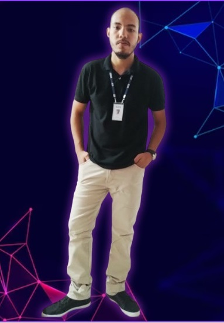

Skills
- Lógica de programação
- Advpl
- Tlpp
- Html
- Css
- Javascript
- Pl/sql
- Sql
- Oracle
- Sql server
- Soap
- Git, github e gitlab
- Powershell
- Erp Protheus
- Apis rest
- Webhooks
- Jenkins
- Desenvolvimento com ia
Desenvolvendo soluções corporativas há anos com conhecimento aprofundado em ERP Protheus, bancos de dados e inteligência artificial, proprietário da Plugados Dev e do produto PLUG - Sistema de Logística de Entregas.


De agricultor no interior a Analista Sênior ERP Protheus e Analista de Dados. Dedicação é o que define evolução.

Sou um profissional de TI com graduação em Análise e Desenvolvimento de Sistemas pelo IF Goiano, além de pós-graduação em Sistemas de Informação pela FAVENI e pós-graduação em Banco de Dados com Big Data pela UFG.
Atualmente estou cursando a pós-graduação em Inteligência Artificial Aplicada no IFG.
Além da minha trajetória acadêmica e profissional, gosto de audiobooks, artesanato e tenho uma grande paixão por computação.
Também sou muito fã de Naruto, Harry Potter e Game of Thrones.
NOME : David R. Garcia
IDADE : 29
CARGO : Desenvolvedor ADVPL
LOCALIZAÇÃO : Goiânia-GO, Brasil
Competências técnicas, habilidades interpessoais e tecnologias utilizadas no meu dia a dia de desenvolvimento e automação.
Minha jornada profissional
Analista de Negócio e Desenvolvedor ADVPL. Desenvolvimento de novas funcionalidades e pontos de entrada, desenvolvimento de APIs, análise de requisitos, testes, acompanhamento de projetos e desenvolvimento de acordo com as atividades apontadas na ferramenta Redmine, acompanhamento da execução de projetos e atendimentos de O.S. através da ferramenta Trello, implantação, treinamentos, análise da infraestrutura Totvs com foco em performance e testes de desempenho, além de atualizações.
Analista de Negócio e Desenvolvedor ADVPL. Desenvolvimento de novas funcionalidades e pontos de entrada de acordo com a regra de negócio específica de cada cliente, análise de requisitos, testes, TIR, testes automatizados, atendimento de tickets através do help desk Movidesk, implantação, treinamentos, análise da infraestrutura Totvs com foco em performance e testes de desempenho, atualizações e manutenção de portais.
Analista de Infraestrutura. Rede, manutenção de hardware, criação de usuários, criação de planilhas eletrônicas e Access.
Analista Protheus (ERP Totvs). Atendimento de tickets através do help desk GLPI, análise de processos, treinamentos e capacitação, implantação de novos módulos, criação de relatórios e desenvolvimento de novas funcionalidades através de pontos de entrada.
Gerenciamento de contas e compras do setor de TI. Gestão de contratos e cotação/compras de novos equipamentos e sistemas.
Outras atuações. Analista de faturamento, analista de almoxarifado e analista de processos/sistema de posto de gasolina.
Uma visão resumida de projetos reais com foco em integração, automação e melhoria operacional.
Integração entre Protheus ERP e Totalbank para automatizar pagamentos, aprovações e monitoramento.
Ver detalhesPipeline com Jenkins, GitLab/GitHub e PowerShell para reduzir falhas e acelerar publicações.
Ver detalhesIntegração entre Protheus e Arquivei com captura automática e monitoramento contínuo.
Ver detalhes